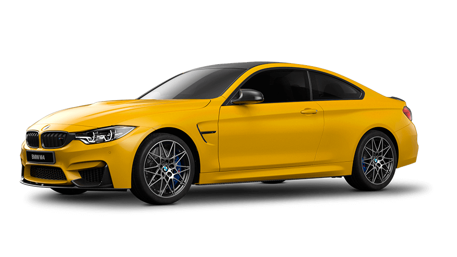

Mire se erdhet tek Makinat Luksoze
Ketu do i gjeni disa makina luksoze qe i ofron AutoSalloni jone.Shpresojme te ju pelqejne.
AMG GT

Mercedes AMG GT është një ikonë e elegancës dhe fuqisë. Me një dizajn aerodinamik që përfaqëson përsosmërinë, kjo makinë ofron një motor V8 Bi-Turbo që kombinon performancën ekstreme me komfortin e udhëtimit.
Brendësia është një përzierje e lëkurës më të mirë dhe teknologjisë më të avancuar, duke përfshirë ekranet dixhitale, sediljet me masazh dhe ndriçimin ambiental që krijon një atmosferë të ngrohtë dhe moderne.
Është sinonim i luksit dhe stilit të jetesës elitare.Viti i prodhimit 2029
Qmimi per AMG GT: 170.000 !
Brendësia është një përzierje e lëkurës më të mirë dhe teknologjisë më të avancuar, duke përfshirë ekranet dixhitale, sediljet me masazh dhe ndriçimin ambiental që krijon një atmosferë të ngrohtë dhe moderne.
Është sinonim i luksit dhe stilit të jetesës elitare.Viti i prodhimit 2029
Qmimi per AMG GT: 170.000 !
Mercedes CLA

Mercedes CLA është një kupe luksoze që ofron një dizajn të rafinuar dhe teknologji moderne. Kabina është e veshur me materiale premium, duke përfshirë lëkurë të butë dhe alumin të përpunuar,
ndërsa sistemi MBUX me kontroll zanor e bën çdo udhëtim të lehtë dhe të këndshëm. E pajisur me motorra efikasë dhe opsione hibride,
CLA kombinon luksin dhe prakticitetin për një përvojë të përditshme të pashembullt.Viti i prodhimit:2020
Qmimi per Mercedes CLA: 76.000
ndërsa sistemi MBUX me kontroll zanor e bën çdo udhëtim të lehtë dhe të këndshëm. E pajisur me motorra efikasë dhe opsione hibride,
CLA kombinon luksin dhe prakticitetin për një përvojë të përditshme të pashembullt.Viti i prodhimit:2020
Qmimi per Mercedes CLA: 76.000
BMW M7

BMW M7 është simboli i fuqisë së pakompromis dhe luksit absolut. Motori TwinPower Turbo V8 i jep kësaj veture performancë të jashtëzakonshme, ndërsa brendësia është një përzierje e teknologjisë dhe artit.
Sediljet e lëkurës Merino, me qepje artizanale dhe detaje të fibrës së karbonit, krijojnë një atmosferë unike.
Sistemi i audios Bowers & Wilkins e bën përvojën akoma më të mirë, duke ofruar luks në çdo detaj.Viti i prodhimit 2020
Qmimi per BMW M7: 49.000
Sediljet e lëkurës Merino, me qepje artizanale dhe detaje të fibrës së karbonit, krijojnë një atmosferë unike.
Sistemi i audios Bowers & Wilkins e bën përvojën akoma më të mirë, duke ofruar luks në çdo detaj.Viti i prodhimit 2020
Qmimi per BMW M7: 49.000
Audi RS7

Audi RS7 përfaqëson një kombinim të luksit modern dhe performancës ekstreme. Me linjat e saj të fuqishme dhe detajet sportive, kjo veturë është një kryevepër estetike.
Kabina është e pajisur me ekranet OLED, sedilje të veshura me lëkurë Nappa, dhe ndriçim ambiental të personalizueshëm. Sistemi Quattro siguron kontroll të shkëlqyer, ndërsa motori V8 Bi-Turbo ofron përshpejtim marramendës.
Është një veturë që të jep luks dhe adrenalinë njëkohësisht.Viti i prodhimit:2023
Qmimi per Audi RS7:170.000
Kabina është e pajisur me ekranet OLED, sedilje të veshura me lëkurë Nappa, dhe ndriçim ambiental të personalizueshëm. Sistemi Quattro siguron kontroll të shkëlqyer, ndërsa motori V8 Bi-Turbo ofron përshpejtim marramendës.
Është një veturë që të jep luks dhe adrenalinë njëkohësisht.Viti i prodhimit:2023
Qmimi per Audi RS7:170.000
Bentley

Bentley Continental GT është sinonimi i luksit absolut. Me një dizajn elegant dhe të fuqishëm, kjo makinë është ndërtuar me materiale më të mira si dru i punuar me dorë dhe lëkurë premium.
Brendësia është e pajisur me sedilje të ngrohura dhe ventiluar, një sistem audio Naim që ofron përvojë akustike unike dhe një konsol qendror të personalizueshëm.
Performanca vjen nga motori V12, duke e bërë këtë veturë një kombinim perfekt të luksit dhe fuqisë.Viti i prodhimit:2020
Qmimi per Bentley:300.000
Brendësia është e pajisur me sedilje të ngrohura dhe ventiluar, një sistem audio Naim që ofron përvojë akustike unike dhe një konsol qendror të personalizueshëm.
Performanca vjen nga motori V12, duke e bërë këtë veturë një kombinim perfekt të luksit dhe fuqisë.Viti i prodhimit:2020
Qmimi per Bentley:300.000
Tesla

Tesla Model S Plaid përfaqëson luksin e së ardhmes me një performancë elektrike të paarritshme. Brendësia e saj minimaliste përfshin një ekran të madh qendror me teknologjinë më të fundit, sedilje të rehatshme me lëkurë vegane dhe një sistem audio të avancuar.
Përshpejtimi i saj 0-100 km/h në më pak se 2 sekonda dhe autonomia mbi 600 km e bëjnë këtë veturë një zgjedhje luksoze dhe ekologjike për të ardhmen.Viti i prodhimit:2021
Qmimi per Tesla:100.000
Përshpejtimi i saj 0-100 km/h në më pak se 2 sekonda dhe autonomia mbi 600 km e bëjnë këtë veturë një zgjedhje luksoze dhe ekologjike për të ardhmen.Viti i prodhimit:2021
Qmimi per Tesla:100.000
AUDI RSQ8

Audi RS Q8 është një SUV luksoz që ofron performancë dhe komoditet. Kabina është një hapësirë e rafinuar me lëkurë Valcona, qepje artizanale,
dhe teknologji cutting-edge si ekrani MMI Touch Response dhe sistemin e audios Bang & Olufsen.
Motori V8 Bi-Turbo dhe sistemi Quattro sigurojnë një përvojë të shkëlqyer drejtimi, ndërsa dizajni agresiv dhe elegant e bën këtë SUV të dallueshëm. Viti i prodhimit:2018
Qmimi per Audi RSQ8:250.000
dhe teknologji cutting-edge si ekrani MMI Touch Response dhe sistemin e audios Bang & Olufsen.
Motori V8 Bi-Turbo dhe sistemi Quattro sigurojnë një përvojë të shkëlqyer drejtimi, ndërsa dizajni agresiv dhe elegant e bën këtë SUV të dallueshëm. Viti i prodhimit:2018
Qmimi per Audi RSQ8:250.000
Masserati

Maserati Levante Trofeo është një përfaqësues perfekt i elegancës italiane dhe performancës sportive. Kabina është e pajisur me lëkurë Pieno Fiore, detaje të fibrës së karbonit dhe një sistem audio Harman Kardon.
Motori V8 Twin-Turbo i zhvilluar nga Ferrari e bën këtë SUV një fuqi të pakontestueshme në rrugë.
Teknologjia moderne dhe ndjesia e luksit të përpunuar e bëjnë Levante Trofeo një ikonë në botën e SUV-ve luksoze.Viti i prodhimit:2018
Qmimi per Masserati:176.000
Motori V8 Twin-Turbo i zhvilluar nga Ferrari e bën këtë SUV një fuqi të pakontestueshme në rrugë.
Teknologjia moderne dhe ndjesia e luksit të përpunuar e bëjnë Levante Trofeo një ikonë në botën e SUV-ve luksoze.Viti i prodhimit:2018
Qmimi per Masserati:176.000